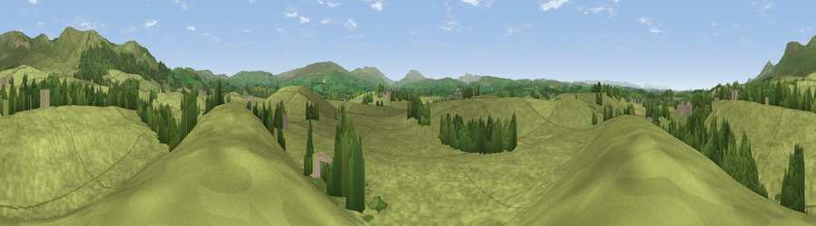

Viewpoint near Great Musgrave
#19749 in England · top 59% of its area beats it · near Great MusgraveThe view, rendered

A 360° render of this exact spot computed from the terrain model, tree cover and land cover — summer colours, afternoon light, calibrated against photographs of famous viewpoints. Real trees, hedges and buildings will differ in detail.
The panorama
Grey silhouette: terrain skyline in each direction (720 bearings, Earth curvature and refraction included). Dashed green: skyline with trees (+15 m) and buildings (+8 m) as obstacles. Blue strip: how far the ground is visible on each bearing.
Where the view opens
Wedge length = distance to the farthest visible ground on that bearing (vegetation-aware). Rings at 10, 25 and 50 km.
What fills the view
91% grassland · 8% woodland
Angular shares of the visible panorama (visual magnitude), not map area. Landscape diversity 0.14 (0–1 Shannon).
Key numbers
More beautiful places nearby
The staircase of upgrades: each row has a higher view potential than everything closer. Driving times are estimates from straight-line distance, calibrated against real road routing — check an actual route before setting out.
| Place | Direction | Drive | Score |
|---|---|---|---|
| Viewpoint near Brough | NE · 3 km | ~7 min | 72.7 |
| Viewpoint near Hilton | N · 4 km | ~10 min | 73.7 |
| Viewpoint near Hilton | NNW · 6 km | ~12 min | 75.2 |
| Viewpoint c10485_7606 | NNE · 10 km | ~19 min | 75.6 |
| Mickle Fell | NNE · 11 km | ~20 min | 75.8 |
| Viewpoint c10024_7603 | SSE · 14 km | ~26 min | 76.9 |
| Great Dun Fell | NNW · 18 km | ~31 min | 77.8 |
| Little Dun Fell | NNW · 19 km | ~33 min | 78.4 |
54.52861, -2.36347 · source: screening · position refined by local search. Computed location — check access rights before visiting.